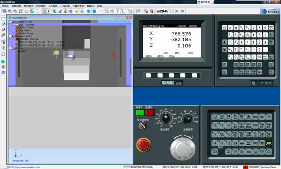
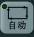
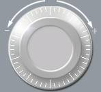

模式选择开关：
急停? 在紧急情况下，按急停按钮，机床所有轴运动立即停止。同时按钮一直被闭锁在停止位置。按钮释放方式随不同的机床制造厂而不同，通常是通过按下按钮作顺时针旋转来释放。
注1：按下此按钮，电机电源被切断。
注2：控制单元处于复位状态。
注3：在按钮释放前要排除故障。
注4：按钮释放后，用手动操作或用G28指令返回参考点。
?程序记录入存贮器 2程序的修改3存贮器内程序输出和编辑其他程序

?可执行存贮器内存的程序? 2可执行存贮器内程序的顺序号检索
?通过MDI 和机床操作面板可以实现手动数据输入
?可执行点动进给
?可执行手摇进给
回机床零点
机床锁住（MACHINE LOCK）开关ON时则运动指令脉冲被抑制。因此进给循环启动或手动操作时的位置显示将按输入指令而不断更新,但机床本身并不运动。此功能用于检查程序。
注1：当G27，G28或G30指令被设定时，机床不会运动到参考点，故返回参考点指示灯不会点亮。
注2：M．S．T和B功能被执行。
?按着此按钮，可使轴在选定方向上作快速移动
注1：手动快速移动时的进给速度，时间常数和加减速方式与用G00程序指令时的快速移动速度相同。
注2：在带有存贮型行程极限选择功能时，带有返回参数点功能的轴。在接通电源或急停后，只要参考点返回功能未执行，按下快速进给按钮。进给速度不会变成快速进给，而是保持点动进给速度。 这是因为存储型行程极限在手动返回参考点完成之前不起作用，所以可以防止快速沿轴向到达行程终点。
单程序段（SBK）
机床锁定（MLK）
任选程序段跳过1～9（BDT1―9）
紧急停止按钮 |
手轮 |
 |
 |